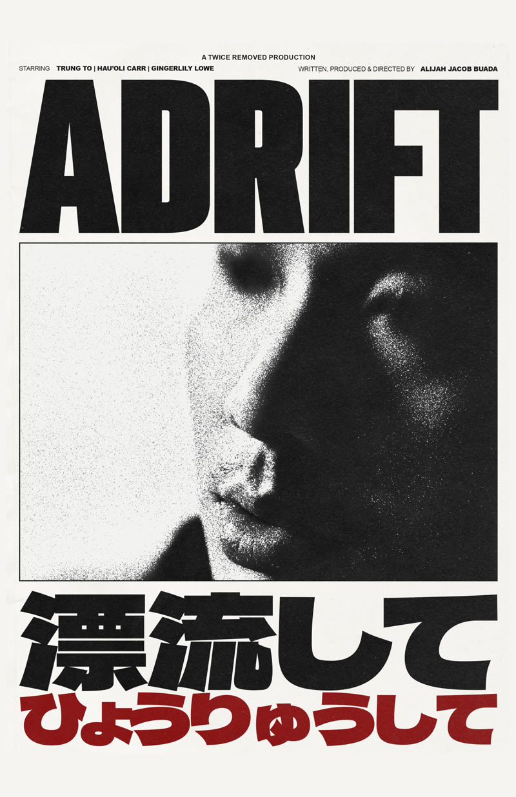
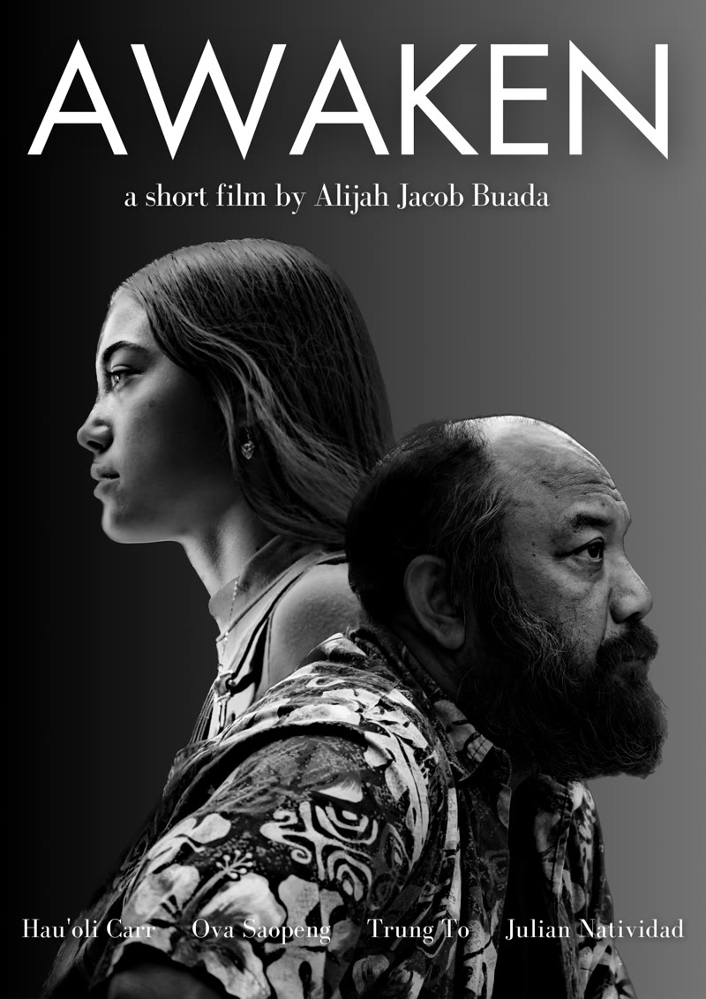
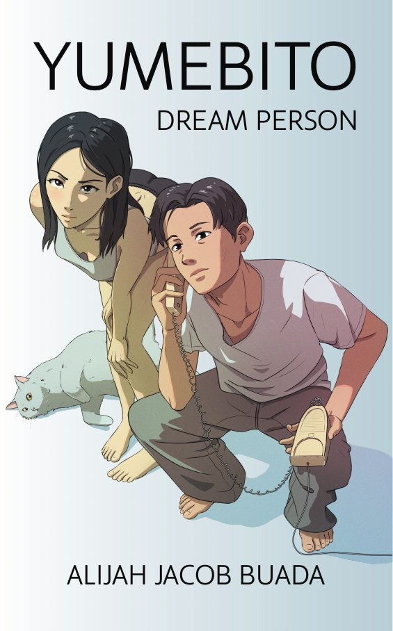

goneadrift
hi, i'm alijah. i make quiet films, write about dreams, and compose out of san diego. this is where i keep what i've made and what made me.
- training to become a medical assistant
- adrift screened at Japan Film Festival LA and Hidden City 2025
- on the radio: seven of my songs, 89.1 to 105.9
- last five-star watch: call me chihiro
films
映画things i shot
A novice astral projector seeks out his grandmother's advice after meeting a strange woman in a place beyond ordinary reality.

A young girl living with delusion and a weary local keep returning to their favorite bench by the sea.
sound
音mine, then theirson repeat · ALIJAH JACOB · updates with the playlist
the shelf
本棚gold standards filmPerfect DaysWim Wenders, 2023
filmPerfect DaysWim Wenders, 2023 animeBakemonogatariShaft
animeBakemonogatariShaft mangaOmoide EmanonShinji Kajio, Kenji Tsuruta
mangaOmoide EmanonShinji Kajio, Kenji Tsuruta book1Q84Haruki Murakami
book1Q84Haruki Murakami artYuji MoriguchiA-Un, acrylic and gesso on canvas, 2016
artYuji MoriguchiA-Un, acrylic and gesso on canvas, 2016 televisionNo ReservationsAnthony Bourdain, 2005–2012
televisionNo ReservationsAnthony Bourdain, 2005–2012favorite anime · myanimelist
 Gachiakuta
Gachiakuta Chitose Is in the Ramune Bottle
Chitose Is in the Ramune Bottle Golden Boy
Golden Boy Soul Eater
Soul Eater Sonny Boy
Sonny Boy Samurai Champloo
Samurai Champloo Nana
Nana Katanagatari
Katanagatari Mushoku Tensei
Mushoku Tenseiletterboxd top four


nobody explains chihiro to you. she just simply is. imaizumi builds the film the same way. scenes do not set up. they are already happening when you get there.more reviews ↗
writing
文pages
Memory is fragile. So is he.
In a quiet town, an unnamed man drifts through the soft routine of his life. Then a stranger calls his phone, a little girl appears at his door, and his dreams start to sharpen until dreaming and living can't be told apart.
read the first pages ↓about
自己紹介the long versionmost of my ideas come to me while i'm asleep. i wake up, write down whatever's left, and spend months trying to find the rest of it.
i'm alijah jacob buada. i write, produce, and direct my own films. adrift is about a young man who learns to leave his body and finds a woman waiting on the other side. awaken is about two seeming strangers and a bench by the sea. my novel, yumebito, is about a man who can't tell anymore which of his lives is the dream. my music is the same thing without words: instrumental pieces somewhere between jazz and classical, written mostly at night, mostly alone. i never planned for everything to be about dreaming. it just keeps turning out that way.
the storytellers i learn from are the ones who pay attention: haruki murakami, anthony bourdain, eddie huang.
for four years i worked inside other people's memories. at your legacy your story, i digitized old analog media and helped turn it into memoirs and documentaries. you learn a lot about someone from what they chose to keep.
i studied film at san diego state. now i'm training to become a medical assistant. people find that surprising. to me it's the same work: paying attention to people. i'm still writing. i'm always still writing.
- in progress
Medical Assistant program
Pima Medical InstituteWorking toward my medical assistant certification.
- 2023 – 2026
Director of Production Operations
Your Legacy Your Story · San DiegoOversaw multiple creative divisions and led a team of video editors. Ran production on biographies and family history books, led digitization, and brought tools like Monday.com and AI into the workflow.
- 2022 – 2023
Laboratory Operations Manager
Your Legacy Your Story · San DiegoManaged digitization projects from planning to delivery, tracked milestones and records, and solved workflow problems before they became delays.
- degree
B.S. Television, Film & New Media
San Diego State UniversityEmphasis in critical studies. Summa cum laude.